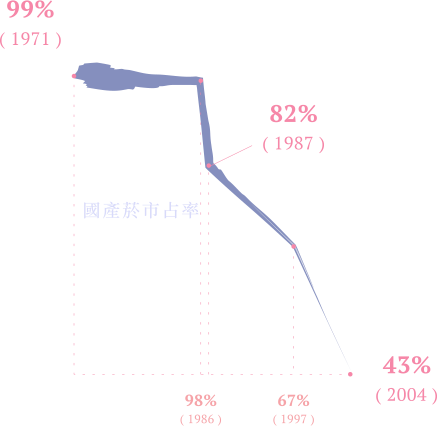
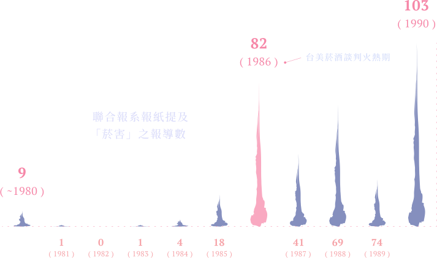
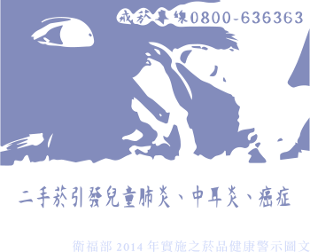
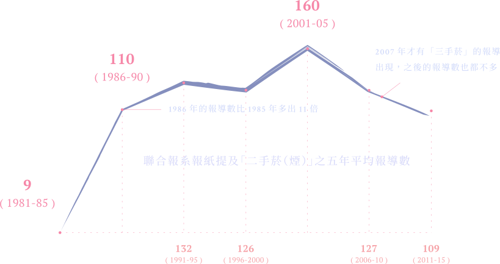

於是，
國家與董氏愈走愈近。

過去，台灣每兩位成年男性，就有一人抽菸；
病房、車廂、餐館，只要菸癮一來，隨時可以點上一根。
菸，除了是拉近人我關係的利器，也在文化儀式中占有一席之地。
如今，吸菸區不僅比廁所還難覓，吸菸者還會受到嚴厲的道德譴責；
菸盒被印上恫嚇意味十足的圖文、菸價隨著健康捐不斷調漲。
近期，國民健康署甚至將修正《菸害防制法》，把電子煙也納入管制。
若一名活在1990年代的老菸槍不小心穿越時空，肯定會對現在的反菸景況大惑不解：
那帶有社交功能、排遣壓力、富含文化意義的菸，怎麼會在二十年內崩壞到如此境地？
針對這個問題，有幾種常見的解釋：
是的。在菸脫離國家壟斷之前，賣菸是國庫收入的重要來源，承認吸菸有害健康，是要政府跟自身利益過不去。
所以，當美國在1964年發表報告確認吸菸是肺癌的主因時，公賣局第一時間是否認、消毒。
當董氏於1984年把矛頭指向公賣局，公賣局的回應是沒有回應。
得不到政府的支持，單靠董氏宣導，反菸力量太微薄。
此時，美國有如一把利斧，朝島內穩固的敬菸結構劈開一道缺口。
為了解決國內經濟危機，美國於1980年代要求對美出超甚高的國家降低貿易障礙，否則便要採取報復手段。
此時美國國內反菸風氣正盛，跨國菸商開始將目光投向海外，長期被台灣政府壟斷又無防制規範的菸市場，於是成為雙方都亟欲開放的目標。
在報復手段的威脅下，台灣在1986年底以寬厚的條件開放洋菸入場。公賣局的獨占地位就此打破；同時，反菸機制也悄悄地啟動。
——董氏基金會董事長嚴道
開放洋菸入場，預示著公賣收益的下滑，國家對吸菸的立場逐漸改變，開始注意吸菸對國民健康的折損。
搭著美國強勢進口洋菸吸引的媒體目光，董氏的反菸理念獲得大量曝光。在這過程中，政府逐漸發現由民間團體發起的反菸運動，有助於增加自己與美國對菸談判時的籌碼。

於是，
國家與董氏愈走愈近。
1992年，《菸害防制法》草案送交立法院審議，
一場反菸團體與菸商之間的攻防戰於焉展開…
經過一連串的遊說、動員與交鋒，董氏與菸商終於達成共識；
1997年，《菸害防制法》三讀通過，國家正式接手反菸工作。
但事與願違，《菸害防制法》施行之初即被批評效率不彰，
原因除了是法條與配套措施有許多缺漏，
社會的菸害意識未成熟也是主因。
所謂的菸害意識，是知道抽菸不僅害己，也害人；換言之，就是要把抽菸「公害化」，把個人問題拉升至社會問題。
要把抽菸「公害化」並不容易。這是因為：
一，它的影響範圍不大；二，除了轉瞬即逝的菸霧之外，菸的存在是不可見的，而很難被指認出來；三，菸的傷害非立即顯現；四，菸與台灣文化緊密相連，且受到國家專賣的認可。
所以，要把抽菸「公害化」，單單指出菸有害他人健康是不夠的，它還必須與一連串的科學數據、恐怖圖說連結在一起。
此外，菸害論述常強調二手菸對兒童的危害、（未經證實的）二手菸比一手菸更毒，以加強對抽菸者的道德批判。
三手菸，則進一步擴大抽菸的公害特質：菸害不僅可透過氣體流入體內，還能殘留微粒於環境，形成一種能附著、持續的潛在傷害。
當國家與董氏聯手，大力播送菸害訊息，
透過法規將社會劃分成吸菸區與禁菸區，
同時與醫療機構合作提供戒菸治療，
並於2007年修正法案擴充反菸範圍，
台灣社會漸漸從「敬菸」，走向了「禁菸」。
不，事實上，吸菸有害他人，只走到了抽菸公害化的一半，另一半是…
1995年，台灣開始實施「全民健康保險」，開啟了菸的「究極」公害化之路。
全民健保不僅為健康捐提供法源，更重要的是，它還改變了人與人之間的關係。
全民健保像一張大網，把「個人健康」與「全體國民利益」綁在一塊，一個新的「想像的共同體」於焉誕生。
為了降低吸菸率、彌補連年虧損的健保財務，台灣在2002年開徵5元菸品健康捐。時至今日，健康捐已調漲至20元；今年4月，菸稅也確定調漲20元。

現在，抽菸者面臨到一個奇怪的困境：
無論他遵不遵守法規、到哪裡抽菸，
他都是一個會損害他人健康或醫療資源的「公害」——
當別人吸到他吐出的菸，他是公害；
當他獨自在無人會進入的密閉室裡抽菸，他也是公害。
到此，抽菸者被名為「公害」的天羅地網包圍，而動彈不得。

台灣對菸的究極公害化，正式完成。